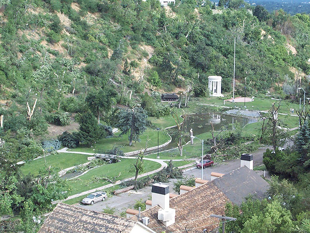
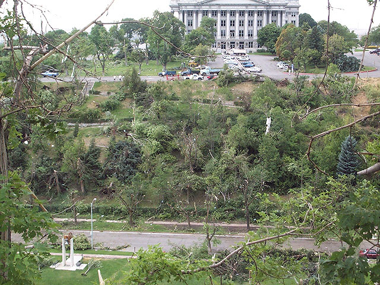
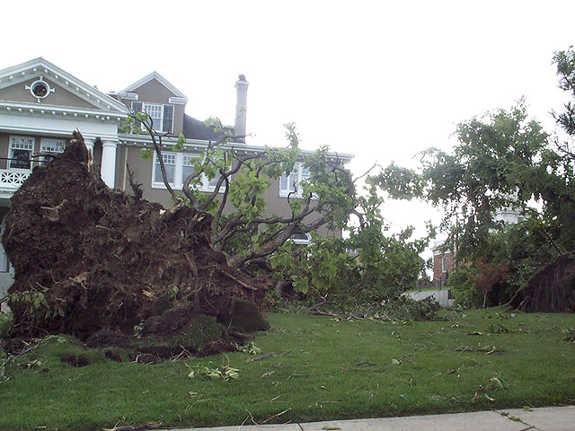
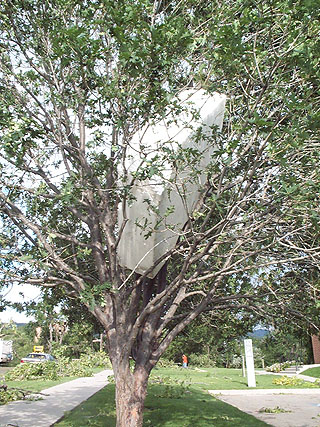
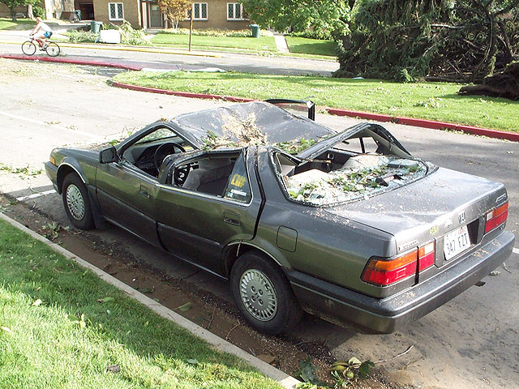

OK, so it was pretty wimpy as far as tornados go compared with
those in other areas, but it was sort of a novelty here. Unfortunately,
I wasn't in the area when it hit, so I missed most of the fun; however,
I did get in on some of the aftermath on the way home. The tornado
passed just to the east of my house, so we didn't get any damage at all
(although our yard did catch a few pieces of some less fortunate houses).

"Memory Grove" is now even more aptly named.

Capitol Hill was hit hard...
I think God was sending a message to the Utah state legislature.
Yes indeed, this is the sad state of Utah.

Now do you really want a Mansion on the Hilltop?

When six-foot blocks of styrofoam learn to climb trees.

Lesson: Don't buy a Honda Accord; get a Civic instead.